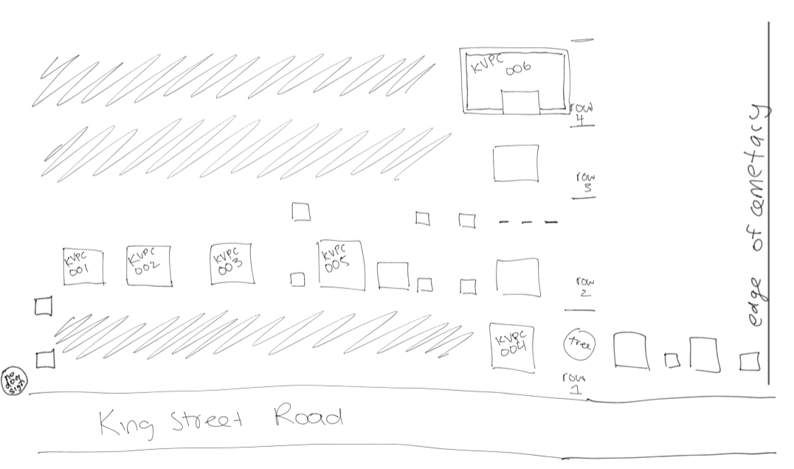

Graveyard Work
Here is the graveyard map that I made at Kemptville Public Cemetary
- While in the field I learned that not all grave stones are remotely simple at fiting into a category using this websites guidelines, there are many limitations to putting data into a box.
- My sketch  from the beginning of the project